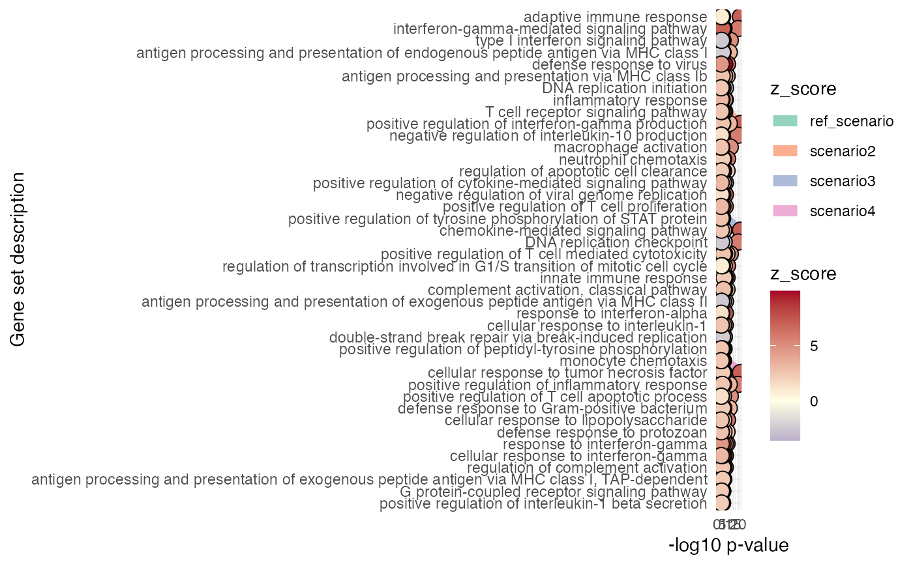
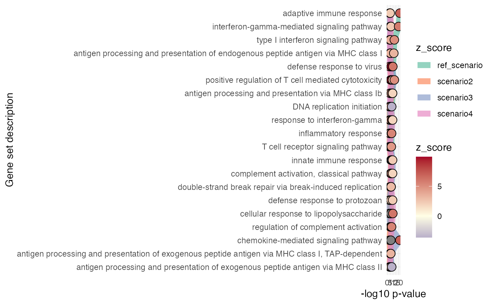

Plots a summary of enrichment results - horizon plot to compare one or more sets of results
gs_horizon( res_enrich, compared_res_enrich_list, n_gs = 20, p_value_column = "gs_pvalue", color_by = "z_score", ref_name = "ref_scenario", sort_by = c("clustered", "first_set") )
| res_enrich | A |
|---|---|
| compared_res_enrich_list | A named list, where each element is a |
| n_gs | Integer value, corresponding to the maximal number of gene sets to be displayed |
| p_value_column | Character string, specifying the column of |
| color_by | Character, specifying the column of |
| ref_name | Character, defining the name of the scenario to compare
against (the one in |
| sort_by | Character string, either "clustered", or "first_set". This controls the sorting order of the included terms in the final plot. "clustered" presents the terms grouped by the scenario where they assume the highest values. "first_set" sorts the terms by the significance value in the reference scenario. |
A ggplot object
It makes sense to have the results in res_enrich sorted by
increasing gs_pvalue, to make sure the top results are first sorted by the
significance (when selecting the common gene sets across the res_enrich
elements provided in compared_res_enrich_list)
The gene sets included are a subset of the ones in common to all different
scenarios included in res_enrich and the elements of compared_res_enrich_list.
library("macrophage") library("DESeq2") library("org.Hs.eg.db") library("AnnotationDbi") # dds object data("gse", package = "macrophage") dds_macrophage <- DESeqDataSet(gse, design = ~line + condition)#>rownames(dds_macrophage) <- substr(rownames(dds_macrophage), 1, 15) dds_macrophage <- estimateSizeFactors(dds_macrophage)#># annotation object anno_df <- data.frame( gene_id = rownames(dds_macrophage), gene_name = mapIds(org.Hs.eg.db, keys = rownames(dds_macrophage), column = "SYMBOL", keytype = "ENSEMBL"), stringsAsFactors = FALSE, row.names = rownames(dds_macrophage) )#># res object data(res_de_macrophage, package = "GeneTonic") res_de <- res_macrophage_IFNg_vs_naive # res_enrich object data(res_enrich_macrophage, package = "GeneTonic") res_enrich <- shake_topGOtableResult(topgoDE_macrophage_IFNg_vs_naive)#>#>res_enrich <- get_aggrscores(res_enrich, res_de, anno_df) res_enrich2 <- res_enrich[1:42, ] res_enrich3 <- res_enrich[1:42, ] res_enrich4 <- res_enrich[1:42, ] set.seed(2*42) shuffled_ones_2 <- sample(seq_len(42)) # to generate permuted p-values res_enrich2$gs_pvalue <- res_enrich2$gs_pvalue[shuffled_ones_2] res_enrich2$z_score <- res_enrich2$z_score[shuffled_ones_2] res_enrich2$aggr_score <- res_enrich2$aggr_score[shuffled_ones_2] set.seed(3*42) shuffled_ones_3 <- sample(seq_len(42)) # to generate permuted p-values res_enrich3$gs_pvalue <- res_enrich3$gs_pvalue[shuffled_ones_3] res_enrich3$z_score <- res_enrich3$z_score[shuffled_ones_3] res_enrich3$aggr_score <- res_enrich3$aggr_score[shuffled_ones_3] set.seed(4*42) shuffled_ones_4 <- sample(seq_len(42)) # to generate permuted p-values res_enrich4$gs_pvalue <- res_enrich4$gs_pvalue[shuffled_ones_4] res_enrich4$z_score <- res_enrich4$z_score[shuffled_ones_4] res_enrich4$aggr_score <- res_enrich4$aggr_score[shuffled_ones_4] compa_list <- list( scenario2 = res_enrich2, scenario3 = res_enrich3, scenario4 = res_enrich4 ) gs_horizon(res_enrich, compared_res_enrich_list = compa_list, n_gs = 50, sort_by = "clustered")gs_horizon(res_enrich, compared_res_enrich_list = compa_list, n_gs = 20, sort_by = "first_set")